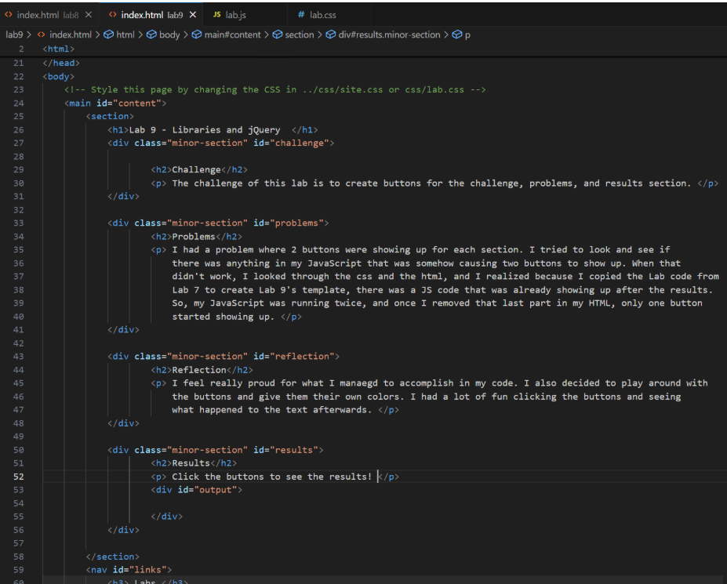
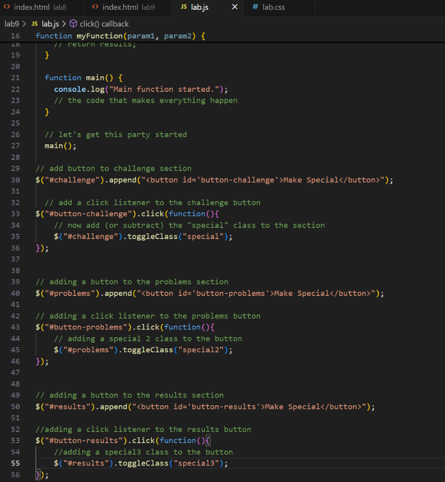
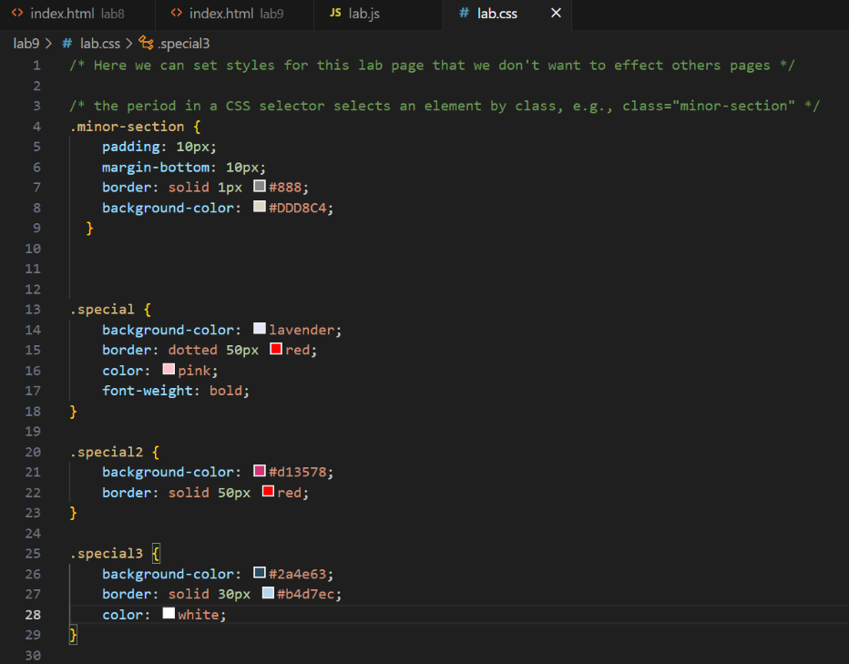

Lab 9 - Libraries and jQuery
Challenge
The challenge of this lab is to create buttons for the challenge, problems, and results section.
Problems
I had a problem where 2 buttons were showing up for each section. I tried to look and see if there was anything in my JavaScript that was somehow causing two buttons to show up. When that didn't work, I looked through the css and the html, and I realized because I copied the Lab code from Lab 7 to create Lab 9's template, there was a JS code that was already showing up after the results. So, my JavaScript was running twice, and once I removed that last part in my HTML, only one button started showing up.
Reflection
I feel really proud for what I manaegd to accomplish in my code. I also decided to play around with the buttons and give them their own colors. I had a lot of fun clicking the buttons and seeing what happened to the text afterwards.
Results
Click the buttons to see the results!
This is a picture of my HTML code.
This is my JavaScript.
This is my CSS code and the changes I made for each button.